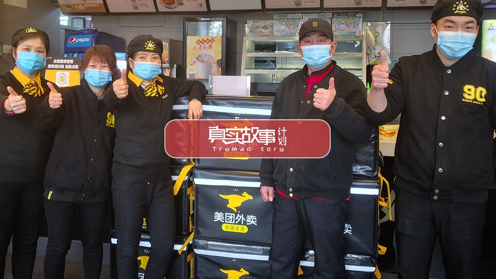
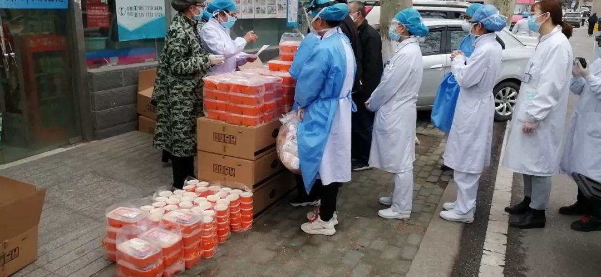

疫情日记 | 武汉封城的第十二天
原文链接 备份链接 如果没坚持更新日记，很难相信距离宣布封城已经过去12天，很多地方陆陆续续开工，我同学证券公司工作，开市后在家办公，也坦白脑子没完全适应复工的节奏，“打开公司电脑有种恍若隔世的错觉，然后看着大盘垮得一塌糊涂”。我们单位下 …

武汉封城，阻断了外来务工者回乡团圆的计划，他们留在城内，同样面临食品供应匮乏、日常吃喝的难题。
32岁的陕西人陈静在汉口火车站从事餐饮工作。从1月26号至今，她和店里的同事、外卖骑手们免费给5家医院的医护人员，平均每天供应1000份左右的午餐和晚餐。
除工作量增加4倍之外，这群逆行者们也面临感染疾病的风险。
故事时间：2020年
故事地点：武汉
 封城之后，武汉发生了好大的变化。所有商铺都关门了，路上一个人都没有，车子也没有，公交、地铁都停了。到了晚上，整个城市空荡荡的，给人一种很凄惨的感觉。我在武汉待了这么多年，从来没见过这样子的武汉
封城之后，武汉发生了好大的变化。所有商铺都关门了，路上一个人都没有，车子也没有，公交、地铁都停了。到了晚上，整个城市空荡荡的，给人一种很凄惨的感觉。我在武汉待了这么多年，从来没见过这样子的武汉
2008年，我从东莞来到武汉工作，待了一阵，感到人很舒服。我觉得武汉和东莞有好大的差别，东莞的工业区，平时你出去，外面看不到人。但在武汉，路上人来人往，晚上也蛮热闹。我当时感到很稀奇，就问了我老公一个很蠢的问题：武汉怎么每天外面都这么多人，他们都不用上班吗？这些人在干嘛？
我还没搞清楚这些问题，就这样在武汉一直待到了现在。我今年32岁，是真功夫汉口火车站店副经理，我在这里工作了近9年。前三年我是普通员工，后来升为副经理，主要的工作内容是值班、排班，管理员工。
1月23日封城那天，我值通宵班，上到1月24日（大年三十）早上7点多，本来想着下了班就回老家吃年夜饭。我老家在陕西咸阳，我提前一个月在网上抢到票了。从武汉回家要12个小时，其实每次回去都很赶。我打算大年三十回去，初一在家呆一天，初二下午就往回走，初三赶回来上班。
但没想到，很快就传来武汉封城的消息。消息一出来，我当时觉得不可能吧，就去跟朋友确认，朋友的店也关了，看来真的封了。我只好退火车票，打电话给女儿，说妈妈回不去了，她就在家里哭。我说没事的，等武汉解封了，我再回去陪你。
我平时很少出门，每天生活在餐厅和住处连成的两点一线中，也很少关注外面的东西。封城后，公共交通停了，我只能走路上班。我家距离汉口火车站很近，只有三公里，我走路很快，每天步行三四十分钟。
我家和华南海鲜市场是相反的方向，而且因为我们家人不喜欢吃肉，所以我从来也不去华南海鲜市场。但是我听说过华南海鲜市场在卖水母啊什么杂七杂八的东西。
12月底，我听说华南海鲜市场有什么病，被封了，但没想到那么严重。腊月二十六（1月20日）的时候，我上班时发现突然好多人戴口罩去餐厅，于是知道了疫情，第二天店里就来了疫情通知。
大年三十这天下了夜班，我大约上午10点多到家，回去就马上睡觉。下午四点多钟醒来，发现店长给我打了好几个电话，让我统计餐厅在武汉的员工。武汉一封，食品供应、员工吃喝都成了问题，餐厅也暂时停业。店长的一通电话让我觉得事态好严重。
那天晚上我没有出门，醒来后也睡不着了，一直刷手机看新闻。年夜饭，我独自吃了碗泡面。女儿年前来武汉看我们，一月十几号和老公一起先回了老家，所以现在只有我一个人在武汉。
最恐惧的是，初一凌晨三点钟我突然醒来，看到很多关于医院的视频和新闻，缺口罩，缺这缺那的，心里好难受。
之后两天，我也没有出门。每天看武汉肺炎的最新消息，越看越心寒。实在受不了的时候，就找人聊天，要么看一会儿电视，但电视也看不进去。
家里几乎没有别的食物，幸好我提前买了一箱方便面。于是我就每天吃泡面，再加上外面人心惶惶，也不敢出去。还好领导叫我去上班，要不然我在家里要发霉了，就算不发霉，因为这个事人心情也不好。

1月26日（正月初二）下午六点，店长打电话让我去上班，说要给前线的医生护士送餐，我说好。她说这个是自愿的，不强求，我说没关系，我去上班。店长又说，第二天要准备1000多份餐。我说，餐厅货可能不够，我去看一下。
挂了电话，我就出门了。这是年三十后我第一次出门。我把餐厅发的一次性口罩戴上，又把自己的手套、帽子、眼镜戴上，能戴的都戴了。说实话，我也担心被感染。但是我想，那些医生、护士要接触病人，而我们只是在餐厅打包。
晚上六点多钟，武汉的天快黑了。路上几乎没人。我下楼走到门口，心里就想：我的娘啊，一个人都没有。心里很不好受，边走边四处张望，这家关店，那家关店。我走上天桥，突然遇到一个人，戴着口罩，就觉得很稀奇，居然有人能出来走走，可能在家待太久了。
再一直往前走，看看路上又没人，又没车，等走到火车站，商铺全部关门。旁边的街道只开了几盏灯，灰蒙蒙的。
我从来没见过这样的火车站，除了火车站广场上的治安，一个人也看不到。在我印象中，火车站永远是有很多人的。我爬到火车站二层的餐厅，看到一两个人在晃悠。我到店里检查了一下货品，很快就回去了。差不多七点多到家，又给自己泡了一碗泡面。
除了我，餐厅经理还让我叫其他员工回来上班。我说那我尽量试一下。我跟员工平时相处得都还可以，因为我也是从员工干起来的，我很理解他们，只要我能帮助他们，我都会帮助。
但我心里也很忐忑，不知道他们愿不愿意。因为这个病已经搞得整个武汉都封了。我还在想，如果员工不愿意，我该怎么去说服？但我真的没想到，他们都很给力。
我第一个给裴大叔打电话，我说大叔，领导要我们明天上班，可能要打包一千多份。大叔啥也没问，就说，嗯，好！我当时觉得，大叔好勇敢啊！其他人也是一口答应。
我们现在一共五个人，都是自愿回来的员工。他们都是很耿直的人，都和我一样，从外地来武汉打工。他们也不担心，就说要把自己保护好。

作者图 | 餐厅员工正在准备食物
我们现在上班，每个人都要穿上防护服，戴口罩，一天一换。你要出个门，从外面进来，也要把自己全身上下的衣服全部消毒，包括口罩。
平时餐厅也消毒，但是这件事之后，消毒更加频繁细心。只要员工出去，进来就得全身消毒，门把手也要消一次毒。
我上班要负责提醒他们，口罩四个小时换一次。餐厅没有厕所，他们出去上厕所，我一般会站在餐厅前面提醒他们消毒，他们不弄，我就拿个喷壶对着他们喷。
消毒费时间，他们都挺着急打包打不完。我理解大家，他们也理解我，我们希望在保护自己的同时，也别伤害到别人。留下来的员工，责任心都很强。
我们进了餐厅一般就很少出去，打包完，清理餐厅，消毒，吃中饭，吃饭之后休息一会儿，上厕所，再消毒，进入下午的备餐状态。
除了餐厅的员工，其他人都不允许进入餐厅。第一天，美团的外卖小哥不知道，走进来了，我们说不能进来，进来又要消毒。第二天我们就在门口贴了一张纸，写着“非请勿入”。他们再来，就敲玻璃。

作者图 | 骑手们在窗口取餐

我们负责给医护人员免费准备午餐和晚餐。我知道的，有武汉第一医院、第十医院、汉口医院、肺科医院，还有金银潭医院。
他们建了一个群，群里有十五六个人，有美团的联系人，有我们店长，也有我们领导等，他们每天沟通需要多少份。
现在每天需要供货1000份左右，但只有5个员工，工作量是平时的4倍，所以我们每天都很忙。我们每天早上7点要到餐厅，一直到把一天的供货量全部完成。最晚9点多回家，正常6、7点。我一般都是第一个到，最后一个离开。
我记得，第一天订单就超过了一千份，我一整天都没吃饭。因为是第一天做这样的供应，也不是很顺手，就是很忙、很忙、很忙。
那天上午的第一批500份订单，我们压力很大。7点上班，但是做饭、做菜到加饭、加菜，再到打包，最起码也要两三个小时。而且第一批和第二批订单的时间隔得很近，有时只有半个小时或者十几分钟。
我们都有分工。炒菜做饭、加饭加汤打菜、打包装袋子、计算数量、整理箱子、消毒、搬东西，全部要人做。
时间快到时，我会催他们，给他们打气，我说“快点快点，大家加油加油，还有多少份多少份，大家尽量赶紧搞，上午搞完了，我们吃顿饭，休息一下，下午继续。大家都不容易。”
我们打包好，美团会派几个司机过来，因为餐量大，来接的司机不仅有开摩托车，还有开小汽车的。之后为了提高效率，我们跟美团商量，让他们提前一天告诉我们每天早上要打包多少，下午打包多少，第一批多少，第二批多少，几点之前打包多少份。
我们还让美团的人提前把外卖箱子送到门口，我们喷消毒液，十五分钟后，再把它拿进餐厅，放进食品包装好。等到美团的配送志愿者差不多快到的时候，再把箱子拿出去。否则我们拿自己的送货箱子装，还得再转一次手。

作者图 | 骑手们正在往车上搬运外卖

领导说，我们可能要持续20天的作战。
但上班这件事，一开始我没敢跟家人说。他们都以为我在家里待着。我们每天都联系，前两天因为太忙，回去太晚，没有接到视频，就回个微信，说睡着了。
但正月初五（1月29日）晚上他们跟我视频时，我忘记脱掉工作服，他们看到了，就说，你上班去了？我说，嗯。他们就说，搞成这个样子你还去上班。我说没事，我们餐厅搞的蛮好的，又不怎么接触外面的人，每天都消毒。家人还是说，你还是注意点。我说我知道，你放心吧。
家人一开始也以为疫情不严重，等他们发觉严重时，1月22日左右开始打电话叫我回去，我说我回不去了。
我的女儿今年12岁，在老家等着我回去。她小时候跟着我在武汉读书，但是三四年级的时候，我把她送回陕西读书，现在读六年级。一年我们也就见一两次。有时我回不去，女儿就过来看我，女儿心比较细。
她几乎就是在店里长大的，武汉所有餐厅经理都认识她。之前夏天她放假，有时候没事就跑来店里。
有一年，我记得很清楚，她三四岁，我那时还是员工，她说妈妈你好累啊，你去坐着，我帮你擦桌子。她自己把毛巾消毒，跑去擦桌子，有两个年轻的小女孩坐在哪儿，她说姐姐你让一下，我把下面那个黑色的擦一下。当时我觉得我女儿好懂事。
还有一年，她十几岁，我上班很忙，没有时间去洗筷子、串筷子、包筷子，她就帮我，有时候店里的那些盘子都是她帮我收的。
昨天她电话给打不进来，吓哭了。后来联系上了，她就问我，妈妈怎么了，是不是生病了还是被隔离了。我说我没事。今天她又给我发微信，说妈妈，奶奶看了你的微博哭了。之前店里发了一篇文章，写了我们几个员工，我婆婆看到了。
我心里其实也担心家人。大年三十之前，我让他们都去医院做了检查，查了血常规，一切都很正常我才放心。
自从我来上班，全体员工都知道了，领导、朋友也知道了，一个个都给我打电话、发微信，我一直没时间回他们。我很感谢他们的关心，但真的是没时间回复。前两天，我在朋友圈发了状态，说“这两天很忙，没有及时回大家的微信和电话，请见谅。”

作者图 | 医护人员在排队取餐
由于太忙，我也没时间做饭。忙完一天，回去往那一躺，整个人瘫了一样。早上旁边的店全部关门，也没有早餐。前两天，大叔起的早，在家里炒了饭，还给我带了一份。
现在人心惶惶的，有谁喉咙痒，咳嗽一声都把人吓一跳。大叔前段时间喉咙不舒服，有点咽喉炎，今天他在店里咳了两声，我说大叔你别咳。他笑起来，他是故意的，要跟我们开玩笑，就想活跃点气氛。
现在每天走在路上，看不到人，我就觉得好忧伤。这两天武汉出了太阳，好像有个别人会出来活动。我也有点怕，到处瞄一下这个人，再瞄一下那个人。每次下班回来，忙完了，一个人坐在这里瞎想的时候是我最担心的时候。
我现在只是想着，这个病赶紧过去，赶紧把武汉解封，到时候就能看到好多好多的人了。
- END -
口述 | 杨静
撰文 | 阳关

原文链接 备份链接 如果没坚持更新日记，很难相信距离宣布封城已经过去12天，很多地方陆陆续续开工，我同学证券公司工作，开市后在家办公，也坦白脑子没完全适应复工的节奏，“打开公司电脑有种恍若隔世的错觉，然后看着大盘垮得一塌糊涂”。我们单位下 …
原文链接 备份链接 《战疫口述记》，是燃财经在新型冠状病毒肺炎期间推出的特别栏目，记录疫情亲历者的观察和感受。本文为第6篇，查看前5篇请点击《我和公司都快熬不住了》《节后返京，太太太南了》《我的“流浪”春节》《农村这样防肺炎》《我在武汉 …
原文链接 备份链接 “ 2月份是必亏无疑的，具体会损失多少，我已经无心去计算。 —全民故事计划的第435个故事 — 一 “我公司啊，有三百号人吧！” 以前每当与亲戚朋友聊天，我最喜欢别人问我的公司有多少人。因为一旦报出公司的人员规模，大概 …
原文链接 备份链接 虽然每天尽量不出门，但买汏烧省不了，现在菜场蔬菜供应充足了，但买菜安全，有时候还是会担心。好在现在进菜场就要测量体温，不戴口罩不让进，感觉比较安全，摊主也会鼓励我们用手机扫码支付，减少大家支付现金时的接触。 记者 | …
原文链接 备份链接 武汉封城已经是第十天。 市民闭门不出，看上去，只要网络还通，手机还有电，大部分人的生活就能继续。 在移动互联网服务的背后，是一个个活生生的人穿梭在城市中，坚守各自的岗位，穿梭在城市中，尽量维持武汉人民生活正常运转。 过 …